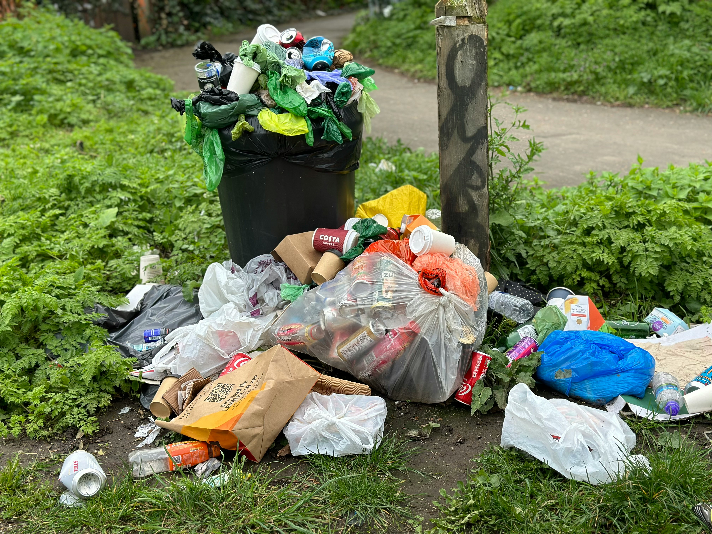

Reduce Food Waste
Transform Your Kitchen Into a
Zero-Waste Haven
Every year, millions of tons of food go to waste while people struggle to find recipes for their ingredients. FlavorFind bridges this gap by turning your leftover ingredients into delicious, creative meals.

40%
Less Food Waste
Average reduction when using our platform
2.5M
Ingredients Saved
From going to waste this year
1M+
Happy Cooks
Creating delicious meals from leftovers
Make Every Ingredient Count
By using ingredients you already have, you're not just saving money – you're helping reduce global food waste and minimizing your environmental footprint, one recipe at a time.
